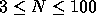
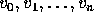
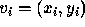
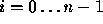
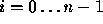

| SCUD Busters |
Some problems are difficult to solve but have a simplification that is
easy to solve. Rather than deal with the difficulties of constructing a
model of the Earth (a somewhat oblate spheroid),
consider a pre-Columbian flat world that is a 500 kilometer  500
kilometer square.
500
kilometer square.
In the model used in this problem, the flat world consists of several warring kingdoms. Though warlike, the people of the world are strict isolationists; each kingdom is surrounded by a high (but thin) wall designed to both protect the kingdom and to isolate it. To avoid fights for power, each kingdom has its own electric power plant.
When the urge to fight becomes too great, the people of a kingdom often launch missiles at other kingdoms. Each SCUD missile (Sanitary Cleansing Universal Destroyer) that lands within the walls of a kingdom destroys that kingdom's power plant (without loss of life).
Given coordinate locations of several kingdoms (by specifying the locations of houses and the location of the power plant in a kingdom) and missile landings you are to write a program that determines the total area of all kingdoms that are without power after an exchange of missile fire.
In the simple world of this problem kingdoms do not overlap. Furthermore, the walls surrounding each kingdom are considered to be of zero thickness. The wall surrounding a kingdom is the minimal-perimeter wall that completely surrounds all the houses and the power station that comprise a kingdom; the area of a kingdom is the area enclosed by the minimal-perimeter thin wall.
There is exactly one power station per kingdom.
There may be empty space between kingdoms.
The input is a sequence of kingdom specifications followed by a sequence of missile landing locations.
A kingdom is specified by a number N (  ) on a single line which indicates the number of sites in this kingdom. The next line contains the x and y coordinates of the power station, followed by N-1 lines of x, y pairs indicating the locations of homes served by this power station. A value of -1 for N indicates that there are no more kingdoms. There will be at least one kingdom in the data set.
Following the last kingdom specification will be the coordinates of one or more missile attacks, indicating the location of a missile landing. Each missile location is on a line by itself. You are to process missile attacks until you reach the end of the file.
Locations are specified in kilometers using coordinates on a 500 km by 500 km grid. All coordinates will be integers between 0 and 500 inclusive. Coordinates are specified as a pair of integers separated by white-space on a single line. The input file will consist of up to 20 kingdoms, followed by any number of missile attacks.
The output consists of a single number representing the total area of all kingdoms without electricity after all missile attacks have been processed. The number should be printed with (and correct to) two decimal places.
12 3 3 4 6 4 11 4 8 10 6 5 7 6 6 6 3 7 9 10 4 10 9 1 7 5 20 20 20 40 40 20 40 40 30 30 3 10 10 21 10 21 13 -1 5 5 20 12
70.50
You may or may not find the following formula useful.
Given a polygon described by the vertices  such that , the signed area of the polygon is given by
where the x, y
coordinates of  ; the edges of the polygon are from  to
for  .
to
for  .
If the points describing the polygon are given in a counterclockwise direction, the value of a will be positive, and if the points of the polygon are listed in a clockwise direction, the value of a will be negative.